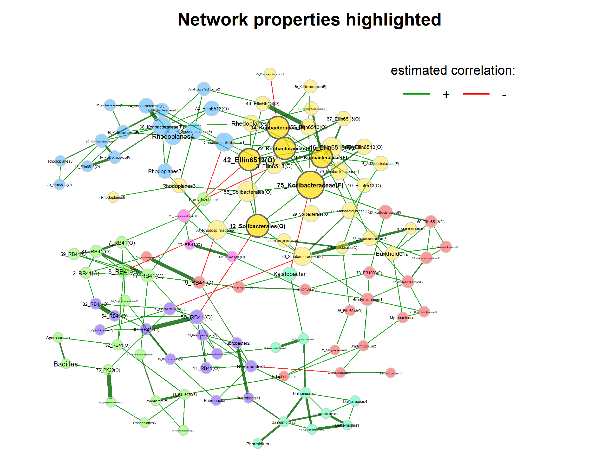
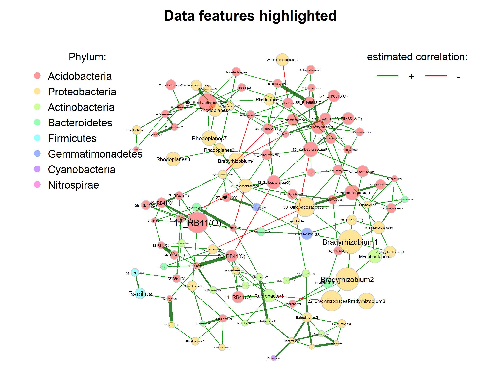
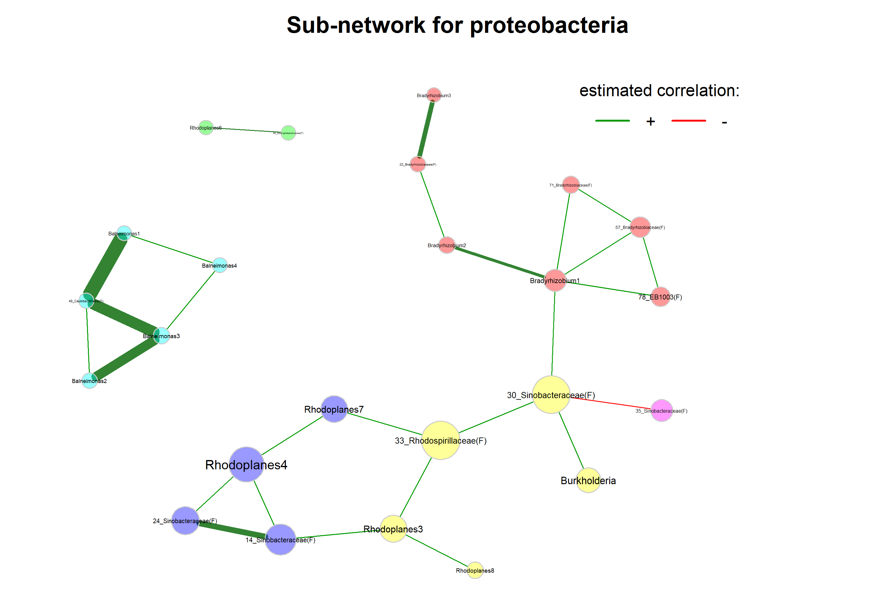
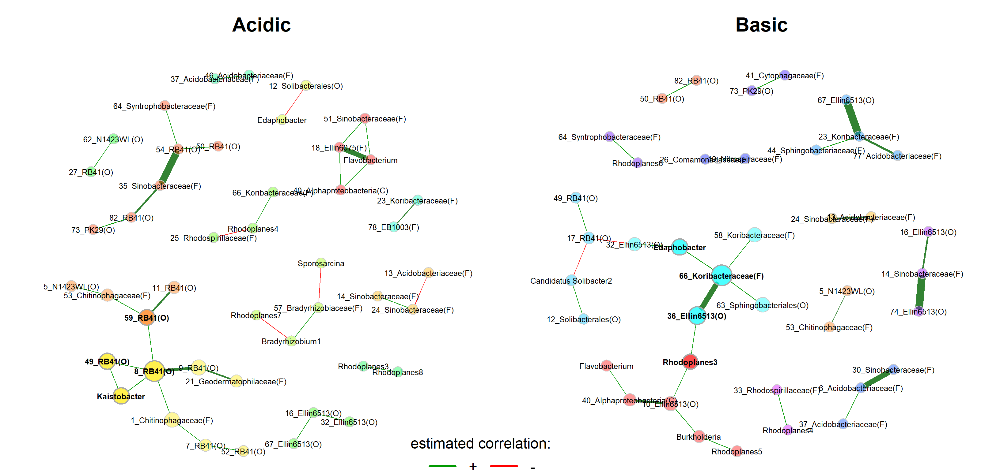
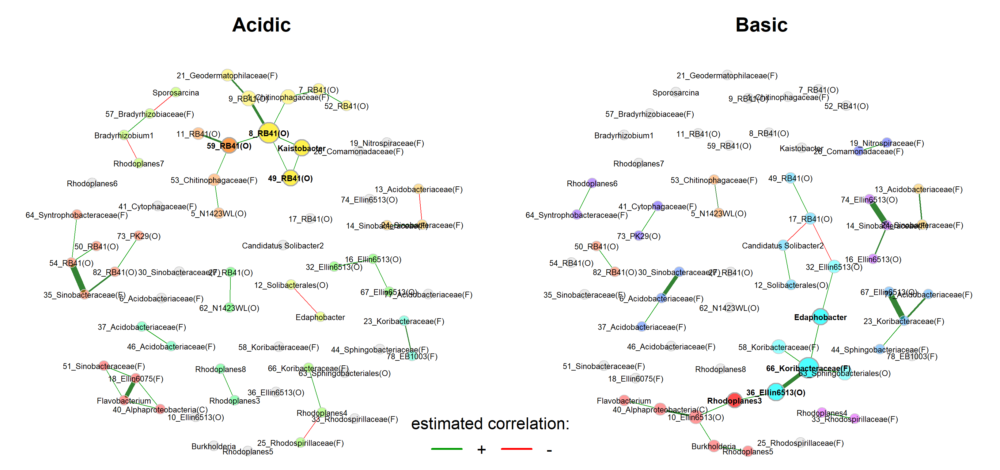

devtools::install_github("zdk123/SpiecEasi")
devtools::install_github("GraceYoon/SPRING")
devtools::install_github("stefpeschel/NetCoMi", force = TRUE, ref = "TSE",
dependencies = c("Depends", "Imports", "LinkingTo"),
repos = c("https://cloud.r-project.org/",
BiocManager::repositories()))Practical applications of learned concepts in R
Network learning and analysis
Here, we learn how a microbial association network is constructed and analyzed using the R package NetCoMi.
The R package NetCoMi
The NetCoMi (Peschel et al. 2021) package is specifically designed to construct, analyze, and compare networks for microbiome data. It implements the complete workflow of learning and analyzing microbial networks explained in lecture 8. Instead of using several functions for each of the steps, NetCoMi provides a single function for network construction (netConstruct()), so the package streamlines the workflow considerably. The user can choose from a variety of methods for data preprocessing, association estimation, sparsification, and transformation. The returned microNet object can then be passed to netAnalyze() (the network analysis function) so that all necessary information is available for the network analysis workflow.
Install and load packages
We start by installing NetCoMi from GitHub. Two of NetCoMi’s dependencies are also only available on GitHub. We will install them manually beforehand to avoid problems.
Load packages needed in this exercise.
library(NetCoMi)Loading required package: SpiecEasilibrary(phyloseq)Load the data
The 88 soil dataset (Lauber et al. 2009) is again used in this example.
soil <- readRDS("data/soil_processed/soil.RDS")Take a look at the data
soilphyloseq-class experiment-level object
otu_table() OTU Table: [ 116 taxa and 89 samples ]
sample_data() Sample Data: [ 89 samples by 1 sample variables ]
tax_table() Taxonomy Table: [ 116 taxa by 7 taxonomic ranks ]# Read count table
otu_table(soil)[1:10, 1:6]OTU Table: [6 taxa and 10 samples]
taxa are columns
1124701 697997 203969 205391 843189 3431064
103.CA2 15 2 0 0 0 3
103.CO3 14 4 0 0 0 1
103.SR3 1 0 0 0 0 1
103.IE2 8 0 0 1 0 0
103.BP1 13 67 0 0 0 3
103.VC2 7 0 0 1 0 7
103.SA2 6 1 0 0 0 0
103.GB2 3 3 0 0 0 0
103.CO2 2 0 0 1 0 5
103.KP1 2 1 0 0 0 1# Taxonomy table
taxtab <- tax_table(soil)
head(taxtab)Taxonomy Table: [6 taxa by 7 taxonomic ranks]:
Kingdom Phylum Class
1124701 "k__Bacteria" "p__Bacteroidetes" "c__[Saprospirae]"
697997 "k__Bacteria" "p__Acidobacteria" "c__[Chloracidobacteria]"
203969 "k__Bacteria" "p__Acidobacteria" "c__DA052"
205391 "k__Bacteria" "p__Acidobacteria" "c__Solibacteres"
843189 "k__Bacteria" "p__Acidobacteria" "c__Solibacteres"
3431064 "k__Bacteria" "p__Gemmatimonadetes" "c__Gemmatimonadetes"
Order Family Genus
1124701 "o__[Saprospirales]" "f__Chitinophagaceae" "g__"
697997 "o__RB41" "f__" "g__"
203969 "o__Ellin6513" "f__" "g__"
205391 "o__Solibacterales" "f__" "g__"
843189 "o__Solibacterales" "f__Solibacteraceae" "g__Candidatus Solibacter"
3431064 "o__N1423WL" "f__" "g__"
Species
1124701 "s__"
697997 "s__"
203969 "s__"
205391 "s__"
843189 "s__"
3431064 "s__" # Sample data
sampdata <- sample_data(soil)
head(sampdata) ph
103.CA2 8.02
103.CO3 6.02
103.SR3 6.95
103.IE2 5.52
103.BP1 7.53
103.VC2 5.99Rename genera
If we want to generate a network on genus level, we run into two problems:
- There are unidentified genera.
- Not all genera are unique.
table(taxtab[, "Genus"])
g__ g__Bacillus g__Balneimonas
83 1 4
g__Bradyrhizobium g__Burkholderia g__Candidatus Solibacter
4 1 2
g__Edaphobacter g__Flavobacterium g__Gallionella
1 1 1
g__Geodermatophilus g__Kaistobacter g__Mycobacterium
1 1 1
g__Phormidium g__Planomicrobium g__Rhodoplanes
1 1 8
g__Rubrobacter g__Sporosarcina
4 1 Solutions:
- Unknown genera are named by higher taxonomic ranks.
- Duplicates are numbered to make them unique.
NetCoMi provides a function renameTaxa(), which does this job for us. It can also be used to rename the taxa according to a desired pattern.
# Rename taxonomic table and make Rank6 (genus) unique
soil_renamed <- renameTaxa(soil,
pat = "<name>",
substPat = "<name>_<subst_name>(<subst_R>)",
numDupli = "Genus")
taxtab_renamed <- tax_table(soil_renamed)
head(cbind(taxtab[, "Genus"], taxtab_renamed[, "Genus"]), 15) Genus Genus
1124701 "g__" "1_Chitinophagaceae(F)"
697997 "g__" "2_RB41(O)"
203969 "g__" "3_Ellin6513(O)"
205391 "g__" "4_Solibacterales(O)"
843189 "g__Candidatus Solibacter" "Candidatus Solibacter1"
3431064 "g__" "5_N1423WL(O)"
156611 "g__" "6_Acidobacteriaceae(F)"
2867534 "g__Candidatus Solibacter" "Candidatus Solibacter2"
4440638 "g__" "7_RB41(O)"
216549 "g__" "8_RB41(O)"
4440611 "g__" "9_RB41(O)"
4416927 "g__Balneimonas" "Balneimonas1"
2578357 "g__" "10_Ellin6513(O)"
1122202 "g__" "11_RB41(O)"
3616127 "g__" "12_Solibacterales(O)" Network construction
Now, we can pass the phyloseq object with renamed genera to NetCoMi’s netConstruct() function.
SpiecEasi is used in the “MB” mode (Meinshausen & Bühlman neighborhood selection) to measure associations between the genera.
A few comments on the arguments:
- The network is created on genus level.
- The data are filtered as follows:
- Only samples with a total of at least 100 reads are included (argument
filtSamp). - Only taxa occuring in at least 5 samples are included (argument
filtTax).
- Only samples with a total of at least 100 reads are included (argument
measuredefines the association or dissimilarity measure, in our case SpiecEasi. Additional arguments are passed tospiec.easi()viameasurePar. We reduce the number of StARS repetitions to 10 to reduce runtime.- Normalization and zero handling is done internally by
spiec.easi(), so we setnormMethodandzeroMethodto “none”. sparsMethodis also set to “none” (SpiecEasi includes StARS model selection to obtain a sparse network).- The “signed” method is used to transform associations into dissimilarities (argument
dissFunc). Thus, strongly negatively associated taxa have a high dissimilarity and conversely a low similarity, corresponding to low edge weights on the network plot.
net <- netConstruct(soil_renamed,
taxRank = "Genus",
filtSamp = "totalReads",
filtSampPar = list(totalReads = 100),
filtTax = "numbSamp",
filtTaxPar = list(numbSamp = 5),
measure = "spieceasi",
measurePar = list(method = "mb",
pulsar.params = list(rep.num = 10)),
zeroMethod = "none",
normMethod = "none",
sparsMethod = "none",
dissFunc = "signed",
verbose = 3,
seed = 12345)netConstruct() returns an object of the class microNet, which contains all matrices generated during network construction.
The object also contains an edge list, giving each edge’s estimated association, dissimilarity, and adjacency. Let’s take a quick look at the edges with the highest and lowest edge weights:
edgelist <- net$edgelist1[order(net$edgelist1$adja, decreasing = TRUE), ]
head(edgelist) v1 v2 asso diss
210 64_Syntrophobacteraceae(F) 73_PK29(O) 0.3597096 0.5658138
190 50_RB41(O) 69_RB41(O) 0.3587220 0.5662499
196 54_RB41(O) 82_RB41(O) 0.3560518 0.5674276
178 43_Ellin6513(O) 55_Ellin6513(O) 0.3485638 0.5707172
112 24_Sinobacteraceae(F) 68_Koribacteraceae(F) 0.3238421 0.5814456
2 1_Chitinophagaceae(F) 9_RB41(O) 0.3000597 0.5915827
adja
210 0.4341862
190 0.4337501
196 0.4325724
178 0.4292828
112 0.4185544
2 0.4084173tail(edgelist) v1 v2 asso diss
129 30_Sinobacteraceae(F) 35_Sinobacteraceae(F) -0.009823811 0.7105715
193 Kaistobacter 75_Koribacteraceae(F) -0.010324659 0.7107477
35 8_RB41(O) 33_Rhodospirillaceae(F) -0.010716865 0.7108857
113 25_Rhodospirillaceae(F) 34_Koribacteraceae(F) -0.011317239 0.7110968
99 22_Bradyrhizobiaceae(F) Rubrobacter3 -0.013935976 0.7120168
9 3_Ellin6513(O) Bradyrhizobium4 -0.030935464 0.7179608
adja
129 0.2894285
193 0.2892523
35 0.2891143
113 0.2889032
99 0.2879832
9 0.2820392Network analysis
The microNet object is now passed to netAnalyze to perform network analysis.
A few comments on the arguments:
centrLCC = TRUE: Centralities are calculated only for nodes in the largest connected component (LCC).- Clusters: Identified using greedy modularity optimization (by
cluster_fast_greedyfromigraphpackage). - Hubs: Nodes with an eigenvector centrality value above the empirical 95% quantile of all eigenvector centralities in the network.
weightDeg = FALSEandnormDeg = FALSE: The degree of a node is simply the number of its adjacent nodes.gcmHeat = FALSE: By default, a heatmap of the Graphlet Correlation Matrix (GCM) is plotted, which we disable here (gcmHeat = FALSE).
netprops <- netAnalyze(net,
centrLCC = TRUE,
clustMethod = "cluster_fast_greedy",
hubPar = "eigenvector",
hubQuant = 0.95,
weightDeg = FALSE,
normDeg = FALSE,
gcmHeat = FALSE)summary(netprops)
Component sizes
```````````````
size: 111 1
#: 1 3
______________________________
Global network properties
`````````````````````````
Largest connected component (LCC):
Relative LCC size 0.97368
Clustering coefficient 0.21135
Modularity 0.61887
Positive edge percentage 95.41284
Edge density 0.03571
Natural connectivity 0.01144
Vertex connectivity 1.00000
Edge connectivity 1.00000
Average dissimilarity* 0.98851
Average path length** 2.89288
Whole network:
Number of components 4.00000
Clustering coefficient 0.21135
Modularity 0.61887
Positive edge percentage 95.41284
Edge density 0.03385
Natural connectivity 0.01108
-----
*: Dissimilarity = 1 - edge weight
**: Path length = Units with average dissimilarity
______________________________
Clusters
- In the whole network
- Algorithm: cluster_fast_greedy
````````````````````````````````
name: 0 1 2 3 4 5 6 7
#: 3 19 31 18 10 16 14 3
______________________________
Hubs
- In alphabetical/numerical order
- Based on empirical quantiles of centralities
```````````````````````````````````````````````
12_Solibacterales(O)
34_Koribacteraceae(F)
42_Ellin6513(O)
61_Koribacteraceae(F)
72_Koribacteraceae(F)
75_Koribacteraceae(F)
______________________________
Centrality measures
- In decreasing order
- Centrality of disconnected components is zero
````````````````````````````````````````````````
Degree (unnormalized):
75_Koribacteraceae(F) 11
68_Koribacteraceae(F) 10
17_RB41(O) 9
30_Sinobacteraceae(F) 8
33_Rhodospirillaceae(F) 8
34_Koribacteraceae(F) 8
42_Ellin6513(O) 8
61_Koribacteraceae(F) 8
12_Solibacterales(O) 7
16_Ellin6513(O) 7
Betweenness centrality (normalized):
33_Rhodospirillaceae(F) 0.18098
30_Sinobacteraceae(F) 0.15913
50_RB41(O) 0.13044
75_Koribacteraceae(F) 0.12811
12_Solibacterales(O) 0.11526
42_Ellin6513(O) 0.10726
17_RB41(O) 0.10492
68_Koribacteraceae(F) 0.10392
Rubrobacter3 0.09958
35_Sinobacteraceae(F) 0.09358
Closeness centrality (normalized):
75_Koribacteraceae(F) 0.56896
12_Solibacterales(O) 0.56828
33_Rhodospirillaceae(F) 0.56453
30_Sinobacteraceae(F) 0.56001
42_Ellin6513(O) 0.54787
17_RB41(O) 0.52447
50_RB41(O) 0.51804
61_Koribacteraceae(F) 0.51734
34_Koribacteraceae(F) 0.50888
56_Solibacterales(O) 0.50290
Eigenvector centrality (normalized):
75_Koribacteraceae(F) 1.00000
12_Solibacterales(O) 0.72317
72_Koribacteraceae(F) 0.70549
34_Koribacteraceae(F) 0.70273
42_Ellin6513(O) 0.70056
61_Koribacteraceae(F) 0.64929
56_Solibacterales(O) 0.57609
16_Ellin6513(O) 0.55649
33_Rhodospirillaceae(F) 0.50822
68_Koribacteraceae(F) 0.49436Highlight node properties
In the first plot, node colors represent the detected clusters and node sizes are scaled by eigenvector centrality. Hub nodes are highlighted by default. Singletons are not included in the plot.
Note that nodes are sometimes placed too close together so that the labels overlap. You may need to play around with the repulsion argument until you find a value where the labels are legible, but also the clusters are still well recognizable.
plot(netprops,
repulsion = 0.95,
rmSingles = TRUE,
shortenLabels = "none",
labelScale = TRUE,
nodeSize = "eigenvector",
nodeSizeSpread = 3,
nodeColor = "cluster",
hubBorderCol = "gray40",
cexNodes = 1.8,
cexLabels = 3,
edgeTranspHigh = 20,
title1 = "Network properties highlighted",
showTitle = TRUE,
cexTitle = 2.3,
mar = c(1, 3, 4, 8))
legend(0.7, 1.1, cex = 1.7, title = "estimated correlation:",
legend = c("+","-"), lty = 1, lwd = 3, col = c("#009900","red"),
bty = "n", horiz = TRUE)
Highlight data features
We now color nodes according to their phylum. The node sizes are proportional to a taxon’s sum of clr-transformed abundances.
# Generate vector with phylum names for node coloring
phyla <- as.factor(taxtab_renamed[, "Phylum"])
names(phyla) <- taxtab_renamed[, "Genus"]
# Reorder levels
phyla <- reorder(phyla, phyla, FUN = length, decreasing = TRUE)
# Create color vector
colvec <- rainbow(length(levels(phyla)))
plot(netprops,
repulsion = 0.95,
rmSingles = TRUE,
shortenLabels = "none",
labelScale = TRUE,
nodeSize = "clr",
nodeColor = "feature",
featVecCol = phyla,
colorVec = colvec,
highlightHubs = FALSE,
cexNodes = 1.2,
cexLabels = 3,
edgeTranspHigh = 20,
title1 = "Data features highlighted",
showTitle = TRUE,
cexTitle = 2.3,
mar = c(1, 10, 4, 6))
# Add legends
legend(0.7, 1.1, cex = 1.7, title = "estimated correlation:",
legend = c("+","-"), lty = 1, lwd = 3, col = c("#009900","red"),
bty = "n", horiz = TRUE)
# Colors used in the legend should be equally transparent as in the plot
col_transp <- colToTransp(colvec, 60)
legend(-1.8, 1.1, cex = 1.7, pt.cex = 2.5, title = "Phylum:",
legend=levels(phyla), col = col_transp, bty = "n", pch = 16) 
Select Proteobacteria
If we are interested in a sub-network (here only genera belonging to proteobacteria), we can also filter the nodes in the network plot.
sel <- names(phyla[phyla == "Proteobacteria"])
sel <- sel[sel %in% colnames(net$adjaMat1)]
plot(netprops,
nodeFilter = "names",
nodeFilterPar = sel,
repulsion = 0.95,
rmSingles = TRUE,
shortenLabels = "none",
labelScale = TRUE,
nodeSize = "eigenvector",
nodeSizeSpread = 3,
nodeColor = "cluster",
hubBorderCol = "gray40",
cexNodes = 1.8,
cexLabels = 3,
edgeTranspHigh = 20,
title1 = "Sub-network for proteobacteria",
showTitle = TRUE,
cexTitle = 2.3,
mar = c(1, 3, 4, 8))
legend(0.7, 1.1, cex = 1.7, title = "estimated correlation:",
legend = c("+","-"), lty = 1, lwd = 3, col = c("#009900","red"),
bty = "n", horiz = TRUE)
Network comparison (acidic vs. basic)
Network construction
Now, we might be interested in how the association networks differ between samples with a high and a low pH, or in other words, between basic and acidic samples.
# Split the phyloseq object into two groups
soil_acid <- phyloseq::subset_samples(soil_renamed, ph < 6.7)
soil_basic <- phyloseq::subset_samples(soil_renamed, ph > 6.8)
soil_acidphyloseq-class experiment-level object
otu_table() OTU Table: [ 116 taxa and 59 samples ]
sample_data() Sample Data: [ 59 samples by 1 sample variables ]
tax_table() Taxonomy Table: [ 116 taxa by 7 taxonomic ranks ]soil_basicphyloseq-class experiment-level object
otu_table() OTU Table: [ 116 taxa and 30 samples ]
sample_data() Sample Data: [ 30 samples by 1 sample variables ]
tax_table() Taxonomy Table: [ 116 taxa by 7 taxonomic ranks ]n_basic <- phyloseq::nsamples(soil_basic)We filter the 30 samples (sample size of the smaller group) with highest frequency to make the sample sizes equal and thus ensure comparability.
net_groups <- netConstruct(data = soil_acid,
data2 = soil_basic,
taxRank = "Genus",
filtSamp = "highestFreq",
filtSampPar = list(highestFreq = n_basic),
filtTax = "totalReads",
filtTaxPar = list(totalReads = 1),
measure = "spieceasi",
measurePar = list(method = "mb",
pulsar.params = list(rep.num = 10)),
zeroMethod = "none",
normMethod = "none",
sparsMethod = "none",
dissFunc = "signed",
verbose = 3,
seed = 12345)Network analysis
All network measures are now computed for both networks.
netprops_groups <- netAnalyze(net_groups,
centrLCC = TRUE,
clustMethod = "cluster_fast_greedy",
hubPar = "eigenvector",
hubQuant = 0.95,
weightDeg = FALSE,
normDeg = FALSE,
gcmHeat = FALSE)Visual comparison
We start with a visual comparison of the two networks using NetCoMi’s plot function.
plot(netprops_groups,
repulsion = 0.96,
rmSingles = TRUE,
labelScale = FALSE,
nodeSize = "eigenvector",
nodeSizeSpread = 2,
nodeColor = "cluster",
sameColThresh = 2,
hubBorderCol = "darkgray",
cexNodes = 2,
edgeTranspHigh = 20,
title1 = "Acidic",
title2 = "Basic",
showTitle = TRUE,
cexTitle = 2,
cexLabels = 0.8,
mar = c(1, 4, 4, 4))
# Overlay a transparent plot on which the legend is plotted
par(fig=c(0, 1, 0, 1), oma=c(0, 0, 0, 0), mar=c(0, 0, 0, 0), new=TRUE)
plot(0, 0, type='n', bty='n', xaxt='n', yaxt='n')
legend(-0.2, -0.9, cex = 1.5, title = "estimated correlation:",
legend = c("+","-"), lty = 1, lwd = 3, col = c("#009900","red"),
bty = "n", horiz = TRUE)
Layout computed separately for each network -> difficult to visually compare certain associations
We now use the same layout in both groups.
plot(netprops_groups,
sameLayout = TRUE,
layoutGroup = "union",
repulsion = 0.96,
rmSingles = "inboth",
labelScale = FALSE,
nodeSize = "eigenvector",
nodeSizeSpread = 2,
nodeColor = "cluster",
sameColThresh = 2,
hubBorderCol = "darkgray",
cexNodes = 2,
edgeTranspHigh = 20,
title1 = "Acidic",
title2 = "Basic",
showTitle = TRUE,
cexTitle = 2,
cexLabels = 0.8,
mar = c(1, 4, 4, 4))
# Add legend
par(fig=c(0, 1, 0, 1), oma=c(0, 0, 0, 0), mar=c(0, 0, 0, 0), new=TRUE)
plot(0, 0, type='n', bty='n', xaxt='n', yaxt='n')
legend(-0.2, -0.8, cex = 1.7, title = "estimated correlation:",
legend = c("+","-"), lty = 1, lwd = 3, col = c("#009900","red"),
bty = "n", horiz = TRUE)
Quantitative network comparison
netcomp <- netCompare(netprops_groups,
permTest = FALSE,
nPerm = 1000,
cores = 6,
seed = 12345,
storeAssoPerm = TRUE,
fileStoreAssoPerm = "general/network_data/spring_assoPerm",
verbose = TRUE)Checking input arguments ... Done.summary(netcomp,
groupNames = c("Acidic", "Basic"),
numbNodes = 5)
Comparison of Network Properties
----------------------------------
CALL:
netCompare(x = netprops_groups, permTest = FALSE, verbose = TRUE,
nPerm = 1000, cores = 6, seed = 12345, storeAssoPerm = TRUE,
fileStoreAssoPerm = "general/network_data/spring_assoPerm")
______________________________
Global network properties
`````````````````````````
Largest connected component (LCC):
Acidic Basic difference
Relative LCC size 0.158 0.211 0.053
Clustering coefficient 0.262 0.000 0.262
Modularity 0.465 0.527 0.061
Positive edge percentage 100.000 86.667 13.333
Edge density 0.182 0.125 0.057
Natural connectivity 0.116 0.082 0.034
Vertex connectivity 1.000 1.000 0.000
Edge connectivity 1.000 1.000 0.000
Average dissimilarity* 0.942 0.961 0.019
Average path length** 2.012 3.060 1.048
Whole network:
Acidic Basic difference
Number of components 43.000 47.000 4.000
Clustering coefficient 0.274 0.000 0.274
Modularity 0.848 0.809 0.039
Positive edge percentage 86.111 93.103 6.992
Edge density 0.013 0.010 0.002
Natural connectivity 0.015 0.015 0.000
-----
*: Dissimilarity = 1 - edge weight
**: Path length = Units with average dissimilarity
______________________________
Jaccard index (similarity betw. sets of most central nodes)
```````````````````````````````````````````````````````````
Jacc P(<=Jacc) P(>=Jacc)
degree 0.037 0.000255 *** 0.999982
betweenness centr. 0.000 0.001522 ** 1.000000
closeness centr. 0.037 0.000255 *** 0.999982
eigenvec. centr. 0.037 0.000255 *** 0.999982
hub taxa 0.000 0.039018 * 1.000000
-----
Jaccard index in [0,1] (1 indicates perfect agreement)
______________________________
Adjusted Rand index (similarity betw. clusterings)
``````````````````````````````````````````````````
wholeNet LCC
ARI -0.014 0.154
p-value 0.813 0.026
-----
ARI in [-1,1] with ARI=1: perfect agreement betw. clusterings
ARI=0: expected for two random clusterings
p-value: permutation test (n=1000) with null hypothesis ARI=0
______________________________
Graphlet Correlation Distance
`````````````````````````````
wholeNet LCC
GCD 1.788 3.159
-----
GCD >= 0 (GCD=0 indicates perfect agreement between GCMs)
______________________________
Centrality measures
- In decreasing order
- Centrality of disconnected components is zero
````````````````````````````````````````````````
Degree (unnormalized):
Acidic Basic abs.diff.
8_RB41(O) 5 0 5
66_Koribacteraceae(F) 0 4 4
10_Ellin6513(O) 0 3 3
17_RB41(O) 0 3 3
59_RB41(O) 3 0 3
Betweenness centrality (normalized):
Acidic Basic abs.diff.
8_RB41(O) 0.8 0.000 0.800
66_Koribacteraceae(F) 0.0 0.657 0.657
36_Ellin6513(O) 0.0 0.514 0.514
Rhodoplanes3 0.0 0.476 0.476
Edaphobacter 0.0 0.476 0.476
Closeness centrality (normalized):
Acidic Basic abs.diff.
8_RB41(O) 0.971 0.000 0.971
59_RB41(O) 0.807 0.000 0.807
1_Chitinophagaceae(F) 0.726 0.000 0.726
9_RB41(O) 0.713 0.000 0.713
66_Koribacteraceae(F) 0.000 0.692 0.692
Eigenvector centrality (normalized):
Acidic Basic abs.diff.
66_Koribacteraceae(F) 0.000 1.000 1.000
8_RB41(O) 1.000 0.000 1.000
36_Ellin6513(O) 0.000 0.719 0.719
Kaistobacter 0.577 0.000 0.577
Edaphobacter 0.000 0.576 0.576
_________________________________________________________
Significance codes: ***: 0.001, **: 0.01, *: 0.05, .: 0.1References
Lauber, Christian L, Micah Hamady, Rob Knight, and Noah Fierer. 2009. “Pyrosequencing-Based Assessment of Soil pH as a Predictor of Soil Bacterial Community Structure at the Continental Scale.” Applied and Environmental Microbiology 75 (15): 5111–20.
Peschel, Stefanie, Christian L Müller, Erika von Mutius, Anne-Laure Boulesteix, and Martin Depner. 2021. “NetCoMi: network construction and comparison for microbiome data in R.” Briefings in Bioinformatics 22 (4): bbaa290. https://doi.org/10.1093/bib/bbaa290.